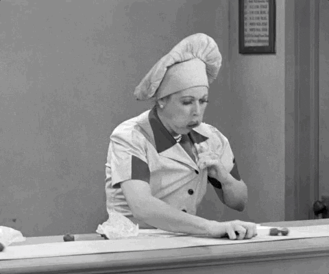

Chocolate Truffles

Chocolate Lovers, Unite
Homemade chocolate truffles are named after truffles because of the striking resemblance
with the original truffle mushrooms. While one is the expensive fungus that grows underneath
the oak trees, the other is the intricate chocolate ganache coated in tempered chocolate as a
chocolate coating. These chocolates do not typically contain real truffles the mushroom; although,
there is no disagreement about the fact that the chocolate industry has already tried its hands
on the chocolate covered mushroom. The classical recipe of the Homemade Chocolate Truffle includes
a ganache which is a mixture of bittersweet chocolate and heavy cream. The classic recipe is
experimented with varied ingredients to obtain different flavors.
Makes about 1 ½ cups ganache, or 24 truffles
Ingredients:
- ⅞ cup heavy cream
- 8 ounces good quality bittersweet chocolate, chopped
- Unsweetened cocoa powder as needed
Steps:
- Heat cream in a pot until it steams. Put chocolate in a bowl, pour hot cream on top, and stir
until chocolate is melted and incorporated into cream.
- Chill until solid all the way through, 1 to 2 hours. Using a chilled melon baller or latex
gloves to prevent the ganache from melting or sticking to your hands, scoop out about a tablespoonful
and quickly roll it into a ball. Repeat, lining truffles on a plate or a baking sheet.
- If truffles become too soft to handle, place them in refrigerator or freezer for a few minutes.
Roll them in cocoa powder, confectioners’ sugar or a mixture of sugar and ground cinnamon.
Serve immediately or store, wrapped in plastic, in refrigerator for up to four days.
Return to homepage